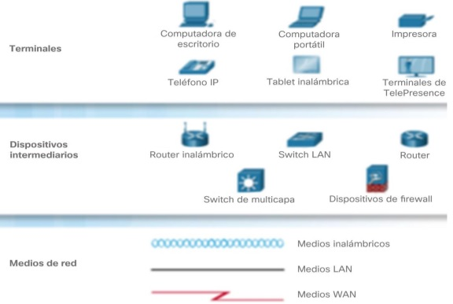

Es el conjunto de instrumentosempleados para manejar información por medio de la computadora como el procesador de exto, la base de datos,
Son el conjunto de recursos,herramientas,equipos,programas informáticos,aplicaciones,redes y medios;que permien la complicaón procesamiento
| Ventajas de las tics. | Desventajas de las tics. | |
|---|---|---|
| En la educación . |
Acceso a diversas fuentes de información.
Comunicación en el tiempo real. Mayor interacción. Desarrolo de nuevas habilidadesfuera del curriculo oficial. Aprendizaje personalizado. |
Riesgo de desigualdad y exclusión.
Pueden ser una fuente de distracción. Acceso a información de baja calidad. Disminuyen las habilidades manuales. |
| En la sociedad. |
Democratización del acceso a la información.
Optimización de trámites borucráticos. Acceso a productos y servicios sin límites geográficos. Acceso a nuevas tecnologias a precios accesibles. |
Peligroso de exposición de datos personales.
Acceso a información falsa. Exclusión y desigualdad. |
| En las empresas. |
Eficiencia en la toma de desiciones.
Nuevas modalidades de rebajo. Nuevas oportunidades de crecimiento. |
Reducción de puestos de trabajo.
Riesgos de ciberataque. |
| En el hogar. |
Facilitan la comunicación.
Permiten el acceso a la educación y el trabajo. |
Menos interpretación familiar.
Contenido inapropiado. |
Los beneficios de las TICS en la gestión de empresas te brinda la oportunidad de los datos especificos para planificar negocios. Tambien te ofrecera diversas analizar.
Es un conjunto de computadoras de sotware que estan conectados por dispositivo

| Ventajas. | Desventajas. |
|---|---|
|
Compartir software y harware.
Compartir e intercambiar archivos entre los equipos. Centralizar programas de gestión 8los usuarios pueden acceder al mismo prrograma para trabajar en el simultaneas de gestión (los usuarios pueden acceder al mismo programa para trabajar) Realizar copias de seguridad automáticamente. Organización efectiva. Mejorar la comunicación y la disponibilidad de información Una vez implementadas son economicas y ahorran tiempo Comunicación rapida y eficiente Posibilidad de manejo y control a distancia de nuestra computadora Mejora la forma de trabajo individual. |
Carece de independiencia.
Existen muchos riesgos por lo que se deben tomar muchas medidasde seguridad. Se requiere personal capacitado para la administracióny el mantenimiento de las redes El costo para la implementaciuón inicial es alto. Costos de operación y mantenimiento. Si se depende de la conexión a internet y falla va a caer la red falla, se puede ver las consecuencias en tiempo,dinero y esfuerzo, |
Cada computadora conectada a una red se denomina host o terminal.
Los servidores son computadoras que proporcionan información a los terminales de la red.Por ejemplo:Servidores de correo electrónico,servidores web o servicios de archivos.
Loa clientes son computadoras que envian solicitudesa los servidores para recuperar información, como una página web desde un servidor web o un correo electronico desde un servidor de correo electronico
La infraestructura de red son todos los recursos que hacen posible la conectividad, la gestión, las operaciones comerciales y la comunicacion de la red o internte.La infraestructura de red comprende hardware y software, sistemas y dispositivos, y permite la informatica y la comunicacion entre usuarios, servicios,aplicaciones y procesos.


Los datos se originan con un dispositivo final, fluyen por la red y llegan a un dispositivo final